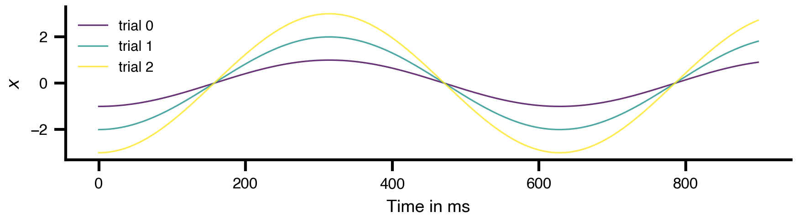
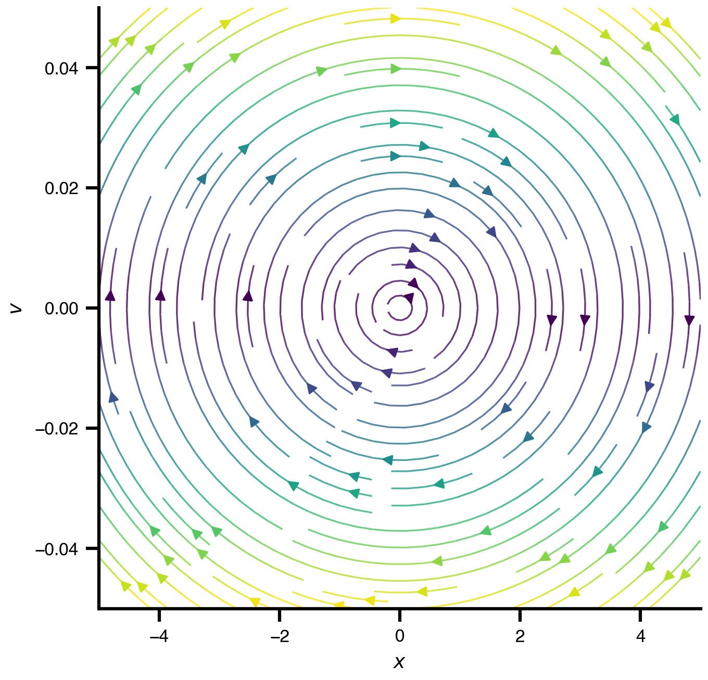
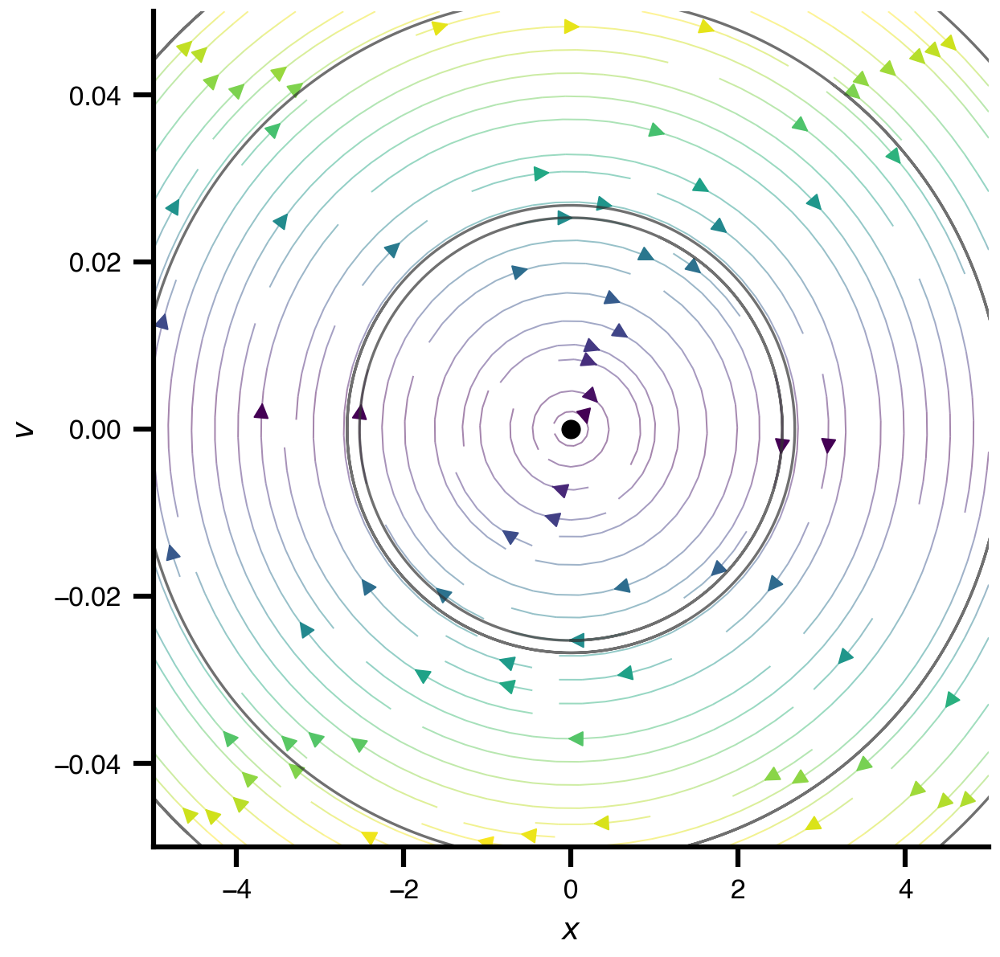
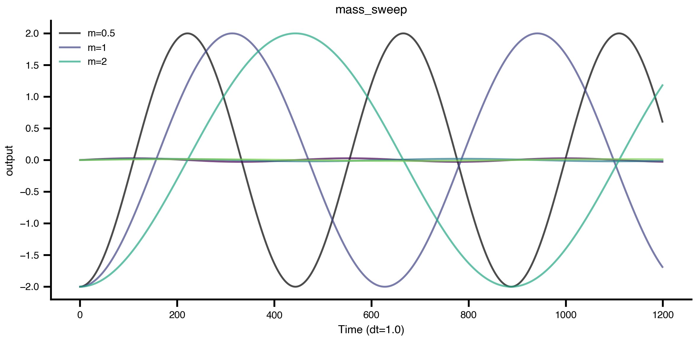
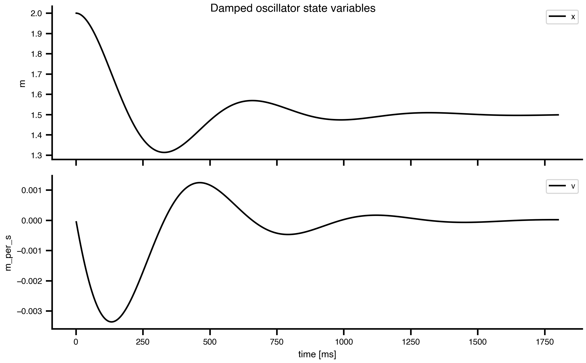
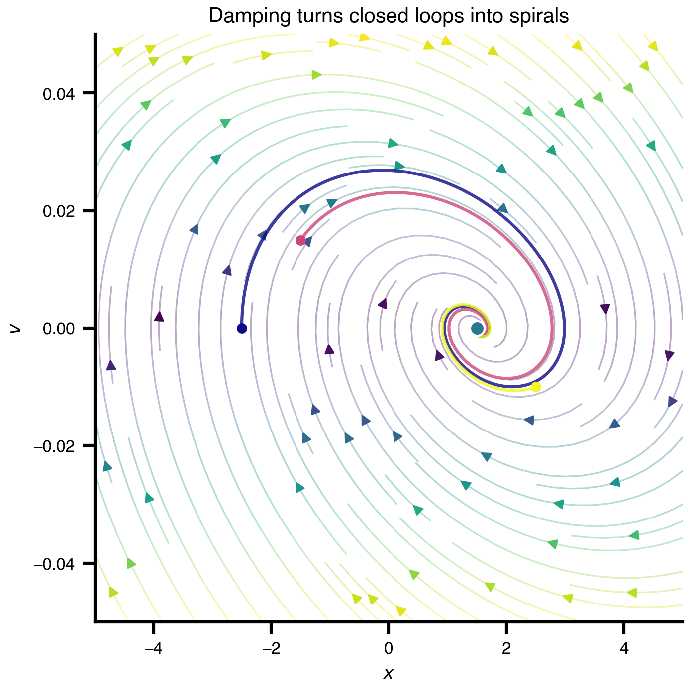
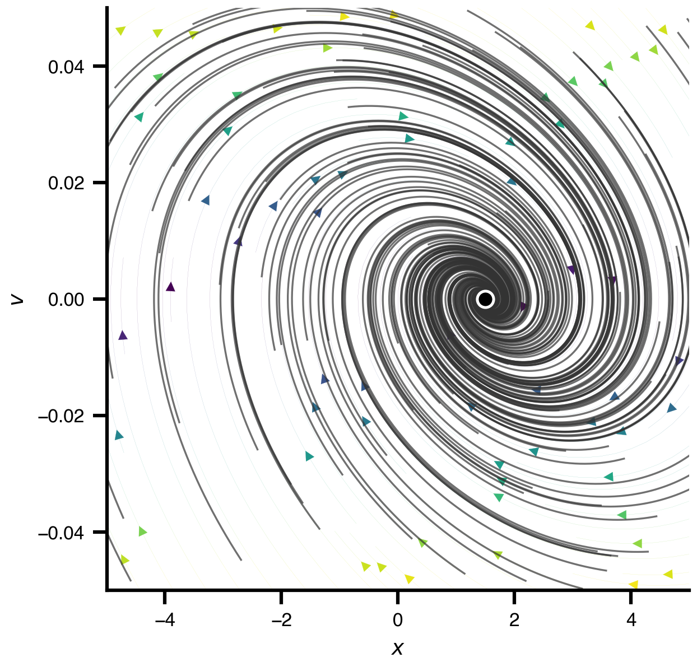

import bsplot
import matplotlib.pyplot as plt
import numpy as np
from IPython.display import Markdown
from tvbo import Dynamics, SimulationExperiment
from tvbo.datamodel.schema import Exploration, ExplorationAxis
bsplot.style.use("tvbo")Dynamical Systems with TVBO: A Spring-Mass Example
1 Dynamical Systems
This notebook is the static companion to the workshop slides. The slides show the same concepts visually; here we make them explicit in TVBO code.
The workshop starts from the generic state-evolution equation
\[ dS_i = \left[f_d(S_i, \theta^d, C_i, I_i)\right]dt + g(S_i, \theta^g)\,dW_i. \]
Here we remove everything except deterministic local dynamics: one system, no coupling, no external input, and no noise. That leaves the core object that appears throughout TVBO: a dynamical system with state variables, parameters, initial conditions, and equations of motion.
\[ dS_i = f(S_i, \theta) \]
1.1 Learning Path
- Specify a dynamical system as a TVBO
Dynamicsobject. - Put it in a
SimulationExperimentand run it withtvboptim. - Read results through named dimensions.
- Compare initial conditions as trajectories in the same flow.
- Use phase space to see the geometry of the dynamics.
- Vary parameters declaratively with
Exploration. - Add damping and load terms to move from a toy model toward realism.
1.2 From a Second-Order Equation to TVBO
A mass \(m\) attached to a spring with stiffness \(k\) satisfies
\[ m\ddot{x} = -kx. \]
Numerical ODE solvers work with first-order systems, so we introduce velocity \(v = \dot{x}\):
\[ \dot{x} = v, \qquad \dot{v} = -\frac{k}{m}x. \]
In TVBO, we write this directly as metadata: state variables, equations, parameters, units, and initial values.
spring = Dynamics(
name="SpringMass",
description="Undamped spring-mass oscillator in first-order form.",
state_variables={
"x": {
"description": "Displacement from equilibrium",
"unit": "m",
"equation": {"rhs": "v"},
"initial_value": 2.0,
},
"v": {
"description": "Velocity",
"unit": "m_per_s",
"equation": {"rhs": "-(k/m) * x"},
"initial_value": 0.0,
},
},
parameters={
"k": {
"description": "Spring stiffness",
"unit": "N_per_m",
"value": 0.0001,
},
"m": {
"description": "Mass",
"unit": "kg",
"value": 1.0,
},
},
)
print(spring.render('yaml'))name: SpringMass
parameters:
k:
name: k
value: 0.0001
description: Spring stiffness
unit: N_per_m
m:
name: m
value: 1.0
description: Mass
unit: kg
description: Undamped spring-mass oscillator in first-order form.
state_variables:
x:
name: x
description: Displacement from equilibrium
equation:
lhs: Derivative(x, t)
rhs: v
latex: false
unit: m
record: true
variable_of_interest: true
coupling_variable: false
equation_type: differential
equation_order: 1
initial_value: 2.0
v:
name: v
description: Velocity
equation:
lhs: Derivative(v, t)
rhs: -k*x/m
latex: false
unit: m_per_s
record: true
variable_of_interest: true
coupling_variable: false
equation_type: differential
equation_order: 1
initial_value: 0.0
number_of_modes: 1
autonomous: true
Each TVB-O element can also render a Markdown report. This enables the user to double-check the equations and specification in human-readable format.
Markdown(spring.render("markdown"))SpringMass
Undamped spring-mass oscillator in first-order form.
autonomous: True; modes: 1; state variables: 2; parameters: 2.
State Equations
\[ \dot{x} = v \] \[ \dot{v} = - \frac{k*x}{m} \]
State Variables
| Variable | Initial Value | Unit | Equation | Domain / Sampling | Flags | Description |
|---|---|---|---|---|---|---|
| \(x\) | 2.0 | \(\mathrm{m}\) | differential (order 1) | — | VOI, recorded | Displacement from equilibrium |
| \(v\) | 0.0 | \(\frac{\mathrm{m}}{\mathrm{s}}\) | differential (order 1) | — | VOI, recorded | Velocity |
Parameters
| Parameter | Value | Default | Unit | Domain / Sampling | Flags | Description |
|---|---|---|---|---|---|---|
| \(k\) | 0.0001 | — | \(\frac{\mathrm{N}}{\mathrm{m}}\) | — | — | Spring stiffness |
| \(m\) | 1.0 | — | \(\mathrm{kg}\) | — | — | Mass |
1.3 Run a Simulation Experiment
For the workshop workflow we usually wrap the model in a SimulationExperiment. The model still describes the equations; the experiment describes how to run them. The SimulationExperiment contains all metadata relevant to run it with different software backends.
experiment = SimulationExperiment(dynamics=spring)
experiment.integration.duration = 900.0
experiment.integration.step_size = 1.0
print(experiment.render('yaml'))id: 1
model: SpringMass
dynamics:
name: SpringMass
parameters:
k:
name: k
value: 0.0001
description: Spring stiffness
unit: N_per_m
m:
name: m
value: 1.0
description: Mass
unit: kg
description: Undamped spring-mass oscillator in first-order form.
state_variables:
x:
name: x
description: Displacement from equilibrium
equation:
lhs: Derivative(x, t)
rhs: v
latex: false
unit: m
record: true
variable_of_interest: true
coupling_variable: false
equation_type: differential
equation_order: 1
initial_value: 2.0
v:
name: v
description: Velocity
equation:
lhs: Derivative(v, t)
rhs: -k*x/m
latex: false
unit: m_per_s
record: true
variable_of_interest: true
coupling_variable: false
equation_type: differential
equation_order: 1
initial_value: 0.0
number_of_modes: 1
autonomous: true
integration:
method: Heun
abs_tol: 1.0e-10
rel_tol: 1.0e-10
time_scale: ms
duration: 900.0
step_size: 1.0
transient_time: 0.0
scipy_ode_base: false
number_of_stages: 2
intermediate_expressions:
X1:
name: X1
equation:
lhs: X1
rhs: X + dX0 * dt + noise + stimulus * dt
latex: false
record: false
conditional: false
update_expression:
name: dX
equation:
lhs: X_{t+1}
rhs: (dX0 + dX1) * (dt / 2)
latex: false
record: false
conditional: false
delayed: true
network:
parameters:
conduction_speed:
name: conduction_speed
label: v
value: 3.0
unit: mm_per_ms
nodes:
- id: 0
label: node_0
record: true
number_of_nodes: 1
distance_unit: mm
time_unit: ms
result = experiment.run("tvboptim")
result.integration.data
============================================================
STEP 1: Running simulation...
============================================================
Simulation period: 900.0 ms, dt: 1.0 ms
Transient period: 0.0 ms
Simulation complete.
============================================================
Experiment complete.
============================================================<xarray.DataArray (time: 900, variable: 2)> Size: 14kB
array([[ 1.99990000e+00, -2.00000000e-04],
[ 1.99960001e+00, -3.99980000e-04],
[ 1.99910004e+00, -5.99920002e-04],
...,
[-1.80554324e+00, -8.60245663e-03],
[-1.81405542e+00, -8.42147219e-03],
[-1.82238619e+00, -8.23964557e-03]], shape=(900, 2))
Coordinates:
* time (time) float64 7kB 1.0 2.0 3.0 4.0 5.0 ... 897.0 898.0 899.0 900.0
* variable (variable) <U1 8B 'x' 'v'The result mirrors the experiment structure. The main simulation output is result.integration.data, an xarray DataArray with named coordinates such as time and variable.
fig = result.integration.plot()Named dimensions make the analysis explicit. For example, select the displacement variable by name rather than by positional index.
x = result.integration.data.sel(variable="x")
v = result.integration.data.sel(variable="v")
x.attrs["description"] = "Displacement from equilibrium"
v.attrs["description"] = "Velocity"
float(x.max() - x.min())\(\displaystyle 3.99999049204372\)
1.4 Initial Conditions: Same Flow, Different Trajectories
Initial conditions choose where a trajectory begins. They do not change the vector field. This distinction matters later for neural models: changing a state variable’s initial value is not the same as changing a physiological parameter.
For the undamped spring, larger initial displacement gives a larger-amplitude orbit, but the frequency remains
\[ \omega = \sqrt{\frac{k}{m}}. \]
initial_conditions = np.array([
[-1.0, 0.0],
[-2.0, 0.0],
[-3.0, 0.0],
])
spring.plot(
"x",
kind="timeseries",
duration=900.0,
dt=1.0,
n_trials=len(initial_conditions),
u_0=initial_conditions,
cmap="viridis",
)
This is still the same spring object. Only the starting state changes.
1.5 Phase Space: The Geometry of the Flow
A time series shows one coordinate as a function of time. A phase portrait shows the full state \((x, v)\). This is the geometry-first view used in nonlinear dynamics and in phase-plane neuroscience.
For the undamped spring, the trajectories are closed loops because energy is conserved. The vector field is shared by every trajectory; only the initial condition changes.
from tvbo.datamodel.schema import Range
fig, ax = plt.subplots()
spring.state_variables['x'].domain = Range(lo=-5, hi=5)
spring.state_variables['v'].domain = Range(lo=-.05, hi=.05)
spring.plot("x", "v", kind="vectorfield", ax=ax)
TVBO can also draw the phase plane directly, including vector field, nullclines, fixed points, and sample trajectories.
spring.plot(
"x",
"v",
kind="phaseplane",
duration=900.0,
dt=1.0,
n_trajectories=4,
show_nullclines=False,
)
1.6 Parameters: Changing the System Itself
Parameters are different from initial conditions. Initial conditions choose where a trajectory begins; parameters reshape the vector field.
Here we vary the mass \(m\) while keeping \(k\), \(x_0\), and \(v_0\) fixed. Heavier mass means more inertia, so the oscillation is slower.
mass_experiment = SimulationExperiment(dynamics=spring)
mass_experiment.integration.duration = 1200.0
mass_experiment.integration.step_size = 1.0
mass_experiment.dynamics.state_variables["x"].initial_value = -2.0
mass_experiment.dynamics.state_variables["v"].initial_value = 0.0
mass_experiment.explorations["mass_sweep"] = Exploration(
name="mass_sweep",
space=ExplorationAxis(parameter="m", explored_values=[0.5, 1.0, 2.0]),
)
mass_result = mass_experiment.run("tvboptim")
mass_result.explorations["mass_sweep"].plot(overlay=True)
============================================================
STEP 1: Running simulation...
============================================================
Simulation period: 1200.0 ms, dt: 1.0 ms
Transient period: 0.0 ms
Simulation complete.
============================================================
STEP 2: Running explorations...
============================================================
> mass_sweep
Explorations complete.
============================================================
Experiment complete.
============================================================
The sweep is part of the experiment specification. That is the pattern we want later: the metadata describes the exploration, and tvboptim executes it.
1.7 Toward Realism: Damping and Load
The ideal spring never loses energy. Real systems usually do. We can specify a second TVBO model by adding a damping term and a constant load:
\[ \dot{x} = v, \qquad \dot{v} = -\frac{k}{m}x - \frac{c}{m}v + g_{\mathrm{eff}}. \]
The damping term changes the transient. The load shifts the equilibrium from \(x = 0\) to
\[ x^* = \frac{m g_{\mathrm{eff}}}{k}. \]
damped_spring = Dynamics(
name="DampedLoadedSpringMass",
description="Spring-mass oscillator with damping and a constant load.",
state_variables={
"x": {
"description": "Displacement from equilibrium",
"unit": "m",
"equation": {"rhs": "v"},
"initial_value": 2.0,
},
"v": {
"description": "Velocity",
"unit": "m_per_s",
"equation": {"rhs": "-(k/m) * x - (c/m) * v + g_eff"},
"initial_value": 0.0,
},
},
parameters={
"k": {"description": "Spring stiffness", "unit": "N_per_m", "value": 0.0001},
"m": {"description": "Mass", "unit": "kg", "value": 1.0},
"c": {"description": "Damping coefficient", "unit": "kg_per_s", "value": 0.006},
"g_eff": {"description": "Constant effective load", "unit": "m_per_s2", "value": 0.00015},
},
)
Markdown(damped_spring.render("markdown"))DampedLoadedSpringMass
Spring-mass oscillator with damping and a constant load.
autonomous: True; modes: 1; state variables: 2; parameters: 4.
State Equations
\[ \dot{x} = v \] \[ \dot{v} = g_{eff} - \frac{c*v}{m} - \frac{k*x}{m} \]
State Variables
| Variable | Initial Value | Unit | Equation | Domain / Sampling | Flags | Description |
|---|---|---|---|---|---|---|
| \(x\) | 2.0 | \(\mathrm{m}\) | differential (order 1) | — | VOI, recorded | Displacement from equilibrium |
| \(v\) | 0.0 | \(\frac{\mathrm{m}}{\mathrm{s}}\) | differential (order 1) | — | VOI, recorded | Velocity |
Parameters
| Parameter | Value | Default | Unit | Domain / Sampling | Flags | Description |
|---|---|---|---|---|---|---|
| \(k\) | 0.0001 | — | \(\frac{\mathrm{N}}{\mathrm{m}}\) | — | — | Spring stiffness |
| \(m\) | 1.0 | — | \(\mathrm{kg}\) | — | — | Mass |
| \(c\) | 0.006 | — | \(\frac{\mathrm{kg}}{\mathrm{s}}\) | — | — | Damping coefficient |
| \(g_{eff}\) | 0.00015 | — | \(\frac{\mathrm{m}}{\mathrm{s}^2}\) | — | — | Constant effective load |
damped_experiment = SimulationExperiment(dynamics=damped_spring)
damped_experiment.integration.duration = 1800.0
damped_experiment.integration.step_size = 1.0
damped_result = damped_experiment.run("tvboptim")
fig = damped_result.integration.plot()
fig.suptitle("Damped oscillator state variables")
fig
============================================================
STEP 1: Running simulation...
============================================================
Simulation period: 1800.0 ms, dt: 1.0 ms
Transient period: 0.0 ms
Simulation complete.
============================================================
Experiment complete.
============================================================
In phase space, damping turns closed loops into spirals. The constant load moves the final equilibrium to \(x^* = m g_{\mathrm{eff}} / k\).
damped_initial_conditions = np.array([
[-2.5, 0.0],
[-1.5, 0.015],
[2.5, -0.01],
])
damped_spring.state_variables['x'].domain = Range(lo=-5, hi=5)
damped_spring.state_variables['v'].domain = Range(lo=-.05, hi=.05)
fig, ax = plt.subplots(figsize=(5.2, 4.8))
damped_spring.plot("x", "v", kind="vectorfield", ax=ax, alpha=0.35, grid_n=24, stream=True)
damped_spring.plot(
"x",
"v",
kind="phase",
ax=ax,
duration=1800.0,
dt=1.0,
n_trials=len(damped_initial_conditions),
u_0=damped_initial_conditions,
cmap="plasma",
lw=1.5,
)
x_equilibrium = damped_spring.parameters["m"].value * damped_spring.parameters["g_eff"].value / damped_spring.parameters["k"].value
ax.plot(x_equilibrium, 0.0, "o", color="C3", ms=7, mec="white", mew=1.0, zorder=10)
ax.set_title("Damping turns closed loops into spirals")
fig.tight_layout()
For a broader qualitative picture, let TVBO add sample trajectories on top of the damped phase plane.
damped_spring.plot(
"x",
"v",
kind="phaseplane",
duration=1800.0,
dt=1.0,
n_trajectories=100,
show_nullclines=False,
lw=0.1
)
1.8 Connection to TVBO Documentation
The spring example is intentionally simple, but each piece maps directly to the main TVBO documentation topics.
| Concept in this notebook | TVBO object or method | Why it matters later |
|---|---|---|
| Equations and parameters | Dynamics |
Neural mass and oscillator models use the same schema. |
| Full experiment execution | SimulationExperiment.run("tvboptim") |
The experiment combines dynamics, integration, networks, observations, algorithms, and continuations. |
| Named output | result.integration.data |
Results are xarray objects, so analysis should use named dimensions like time, variable, and node. |
| Parameter sweeps | Exploration, ExplorationAxis |
Parameter scans become declarative experiment metadata. |
| Damping and load | Model specification | More realistic assumptions are added by changing equations and parameters, not by changing the execution workflow. |
1.9 From Spring-Mass to Neural Mass Models
The next workshop section moves from a physical toy system to neural mass models. The TVBO database already stores many such models with the same structure: state variables, parameters, equations, and metadata.
neural_mass_models = Dynamics.list_db(model_type="neural_mass")
neural_mass_models[:8]['CakanObermayer',
'Epileptor3DStefanescuMcDonald',
'GastSchmidtKnosche_SD',
'GastSchmidtKnosche_SF',
'Hopfield',
'JansenRit',
'JansenRit1995',
'LarterBreakspear']jansen_rit = Dynamics.from_db("JansenRit")
print("state variables:", list(jansen_rit.state_variables))
print("first parameters:", list(jansen_rit.parameters)[:8])state variables: ['y0', 'y1', 'y2', 'y3', 'y4', 'y5']
first parameters: ['A', 'B', 'J', 'a_1', 'a_2', 'a_3', 'a_4', 'a']This is the key bridge: the spring has \((x, v)\), while a neural mass model has variables such as membrane potentials, firing-rate transforms, or synaptic gating variables. But the TVBO workflow remains the same:
- Choose or define
Dynamics. - Put it in a
SimulationExperiment. - Run the experiment.
- Plot and analyze the result.
1.9.1 TASK: Run and Plot Simple Single-Node SimulationExperiment with JansenRit Model
1.10 What Comes Next in the Workshop
The spring notebook stops at a single deterministic system. The later slides add the missing terms from the workshop equation.
| Next concept | TVBO object | Role |
|---|---|---|
| Brain regions and structural connectivity | Network |
Adds nodes, edges, weights, delays, and positions. |
| Inter-regional influence | Coupling |
Turns source-node activity into input for target-node dynamics. |
| External stimulation or perturbations | Event |
Adds time-dependent input \(I_i(t)\). |
| Measurement models | observations |
Transforms hidden state into BOLD, FC, PSD, or custom outputs. |
| Noise | noise terms and stochastic integrators | Adds fluctuations via \(g(S_i, \theta^g)dW_i\). |
| Regime changes | Continuation |
Tracks fixed points, stability changes, and oscillatory branches. |
This is why phase space and stability are introduced early. They are not only mathematical background; they are the language used later to interpret excitability, oscillations, bifurcations, and transitions in neural population models.